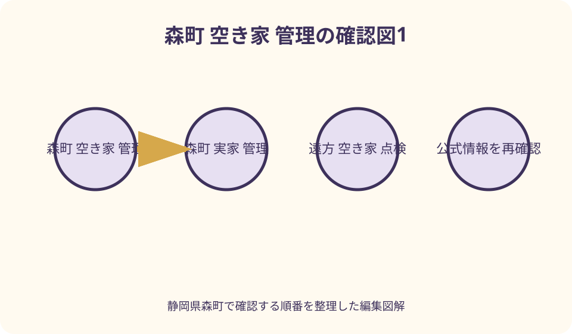
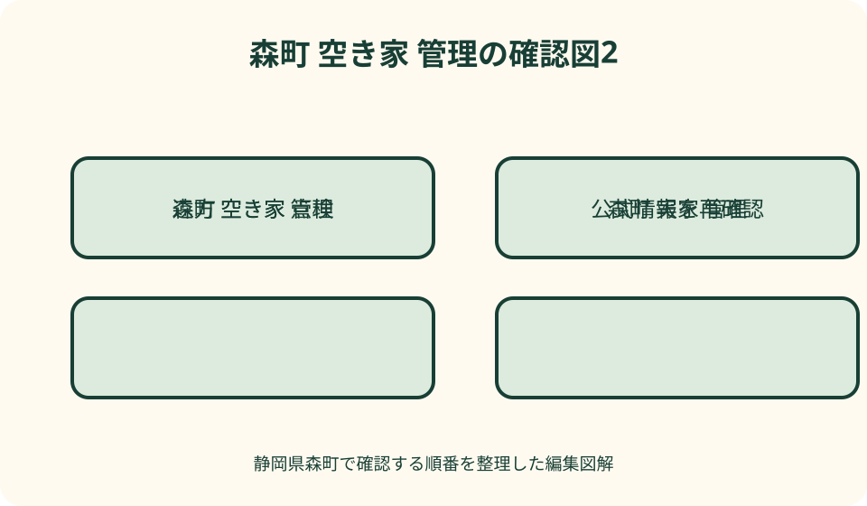

住まい・空き家管理｜最終確認 2026-08-10
静岡県森町の空き家・実家を売らずに管理する実務ガイド
静岡県森町の空き家・実家を当面売らずに保つなら、月次巡回、台風・大雨・地震後の臨時確認、年次の専門点検を分け、毎回同じ撮影位置と点検表で記録します。通風や通水は建物と季節に合う安全な方法を設備業者等へ確認し、雨漏り、枝の越境、郵便物、施錠、可燃物、保険条件を放置しません。遠方家族は代表連絡者、現地担当、支払担当、判断期限を決め、できない作業だけ管理事業者へ委託します。管理を続けられない場合は、賃貸、使用貸借、空き家バンク、除却などを相談しますが、費用、適法性、安全性は物件ごとの専門確認が必要です。

編集イラスト売らない決定と管理をしない状態は別
森町の実家をすぐ売らない理由には、家族の荷物が残る、将来住む可能性がある、相続人の話合いが途中、思い出の整理に時間が必要などがあります。保有を続ける判断自体と、建物を放置することは分けて考えます。
森町の第2期空家等対策計画は町全域を対象とし、管理状況と周辺への影響に応じた対応を示しています。人が住んでいないだけで直ちに危険とは限りませんが、状態を把握しない期間が延びるほど異常の発見が遅れます。
国土交通省の管理指針は、空き家が管理不全空家等や特定空家等の状態にならないための管理例を示しています。本記事の月次作業は一律の義務回数ではなく、建物、敷地、季節、周囲への影響から頻度を決める実務の型です。
最初に『いつまで保有を続けるか』『誰が管理責任を担うか』『年に使える金額と時間』『どの状態なら方針を見直すか』を家族で書きます。期限のない保留を、管理方針と呼ばないことが出発点です。
月次・臨時・年次の三層で予定を組む
通常の巡回は、毎月同じ週など忘れにくい基準日を置きます。建物外周、室内、設備、庭、郵便、施錠を順番に回り、異常がなくても実施日と担当者を残します。月一回で十分という保証ではなく、状態に応じて短くします。
臨時確認は、台風、大雨、強風、地震、凍結、近隣からの連絡後に設定します。発生直後に無理に向かわず、道路規制、河川、土砂災害、停電など公的情報を確認し、安全が確保できる時点で外観から始めます。
年次確認では、屋根、外壁、基礎、給排水、電気、樹木、害虫、保険、税、登記、委託契約をまとめて見直します。所有者自身が危険箇所へ上るのではなく、必要な分野を専門業者へ点検依頼します。
予定表には次回日だけでなく、欠席時の代替担当、荒天時の延期判断、緊急連絡先を入れます。遠方からの移動が難しい時は、現地の親族や事業者が外観だけ確認する段階と、所有者が立ち会う段階を分けます。
巡回前に鍵・電気・水・連絡先を台帳化する
鍵は本数、保管者、複製日、対象扉を一覧にし、植木鉢の下など第三者が推測しやすい場所へ置きません。家族が無断で複製すると入退室記録が崩れるため、代表者の承認方法も決めます。
電気、上水道・簡易水道、井戸、ガス、浄化槽の契約状態を別々に記録します。停止中と使用可能は同じではなく、再開作業、立会い、基本料金、冬季の水抜きなどを各事業者へ確認します。
連絡先には所有者代表、全相続関係者、近隣、町の空き家相談窓口、電気・水道・ガス、保険会社、建築・設備業者、管理受託者を登録します。誰に最初に連絡するかも異常別に決めます。
室内には個人情報や鍵の一覧を見える状態で残さず、家族が共有できる安全な保管場所へ台帳を置きます。紙と電子のどちらを使う場合も、写真の撮影日、担当者、修理前後を追える命名規則をそろえます。

外周点検は道路側から始めて危険なら入らない
巡回時はまず道路や門の外から、屋根材のずれ、雨樋、外壁、窓、塀、門、擁壁、倒木、電線付近の枝を見ます。落下物、傾いた壁、切れた電線を見つけたら敷地へ入らず、関係機関や専門業者へ連絡します。
建物の四面を同じ順で撮り、基礎のひび、地面の陥没、排水口の詰まり、動物の侵入口、蜂の巣らしい物を記録します。写真だけで原因や危険度を断定せず、前回画像との差を質問材料にします。
道路へ伸びた枝、崩れた土、外れた板は通行者や隣地へ影響する可能性があります。自分で高所作業やチェーンソー作業をせず、道路管理者、電力事業者、造園業者等へ作業範囲を確認します。
門扉や郵便受けの破損、ごみの投棄、見慣れない足跡なども記録します。犯罪と決めつけず、侵入の形跡や危険を感じる場合は触れずに警察へ相談し、単独で建物内部へ入らない判断を優先します。
通風は窓を開け放つ作業ではない
通風の目的は室内の湿気やにおいを把握し、空気を入れ替えることですが、窓を長時間開ければ安全というものではありません。雨の吹込み、虫や動物の侵入、施錠忘れ、防犯上の問題を避ける手順が必要です。
入室前に外から窓の破損や室内の異常を見て、二人での巡回や家族への入退室連絡を検討します。室内で強い薬品臭、ガス臭、腐敗臭、崩落を見つけたら換気作業を続けず、屋外へ戻って関係先へ相談します。
開ける窓、時間、網戸の状態、天候、閉鎖と施錠の確認を点検表にします。湿度計を使うなら毎回同じ場所と時刻に近づけ、数値一回だけでカビがない、乾燥したとは結論づけません。
押入れや収納は、害虫や落下物に注意して外観から確認します。荷物を壁へ密着させたままでは裏側を観察できないため、所有者全員の同意を得たうえで点検経路を確保し、移動前後の写真を残します。
通水は契約状態と漏水リスクを確認して行う
水を流す前に、水道契約、元栓、凍結対策、配管の劣化、排水方式を確認します。長期間止めた設備を自己判断で急に使うと漏水が見えない場所で起きる可能性があるため、必要に応じて設備業者へ立会いを頼みます。
通水できる状態では、蛇口、給湯、トイレ、洗面、浴室、台所を設備ごとに確認し、使用前後のメーターや床下への漏れを見ます。水を流した時間と異音、濁り、排水の遅れを記録します。
国の管理指針には、排水設備の封水に関する管理例や、冬期の給水管元栓の閉栓等が示されています。森町の物件でも一律手順にせず、上水道、簡易水道、井戸、浄化槽など実際の構成に合わせます。
水道を止めている家では、無理に通水を管理項目へ入れず、乾燥、害虫、臭気、配管保護について専門家へ代替手順を相談します。水を出さないことと、設備の点検をしないことは同じではありません。

雨漏りは台風後の写真を平常時と比較する
雨漏り確認では、天井、壁、窓回り、押入れ、床の染み、膨れ、剥がれ、においを同じ位置から撮ります。乾いて見える染みでも過去の修理跡か、新しい浸水かを写真だけで断定しません。
台風や大雨後は、屋根へ上がらず地上から屋根材、棟、雨樋、外壁、窓、ベランダを確認します。強風が残る、道路が冠水している、土砂の兆候がある時は訪問を延期し、現地確認のために危険へ近づきません。
変化があれば、発見日時、直前の天候、場所、濡れの範囲、室内外の写真を施工者へ渡します。表面だけを拭いて終了せず、原因調査、応急処置、本修理、濡れた下地の扱いを分けて見積ります。
応急処置のブルーシートや容器も定期確認が必要です。設置したことで修理済みとはせず、風で飛ばないか、雨水が別の場所へ流れていないかを専門業者へ確認し、本修理までの期限を台帳へ書きます。
庭・越境・擁壁は季節ごとの変化を読む
庭の管理は見栄えだけでなく、道路や隣地への枝、落葉、害虫、枯木、排水口、火災時の可燃物に関わります。樹木ごとに場所、高さ、電線・建物・境界との距離を写真で記録します。
枝や根が境界を越えているように見えても、境界位置や法的な処理方法を自己判断しません。隣地所有者と状況を共有し、必要なら土地家屋調査士、造園業者、法律専門家へ相談して手順を決めます。
草刈りは斜面、石、蜂、マダニ、熱中症、飛石の危険があります。遠方家族が短時間で無理に終わらせず、作業範囲、刈草処分、機械使用、近隣車両の養生まで含めて事業者へ依頼する選択を持ちます。
擁壁、石積み、側溝は、膨らみ、ひび、傾き、排水穴の詰まり、土砂流出を前回写真と比較します。異常を見つけた場合は近づかず、町や専門家へ相談し、所有者だけで安全性を判定しません。
郵便物をためず住所変更先も管理する
郵便受けに物がたまると、重要通知の見落としと長期不在の表示につながります。巡回ごとに回収し、宛名、差出人、期限、担当者を記録して、税、保険、契約、行政通知を家族の誰が処理するか決めます。
日本郵便の転居・転送サービスは、届出日から一年間であり、転送開始希望日から一年ではないと案内されています。登録に日数を要する場合や転送されない郵便物等もあるため、公式の最新条件を確認します。
転送だけに頼らず、銀行、保険、電気、水道、登記名義人など各契約先の住所変更が必要かを確認します。法務省は不動産所有者の住所等変更登記に関する案内を公開しているため、該当時期と手続を法務局や司法書士へ相談します。
広告物や新聞の停止、郵便受けの修理も行いますが、投入口を完全に塞ぐことで必要な通知が届かない場合があります。配達事業者と相談し、現地受取、転送、電子通知を役割分担します。
防犯と防火は人が住んでいるように装うことではない
防犯では玄関、勝手口、窓、物置、門扉の施錠を確認し、鍵の不具合やガラス破損を早く直します。タイマー照明やカメラを使う場合も、電源、通信、撮影範囲、近隣のプライバシー、故障時の通知を確認します。
消防庁資料は、郵便物をためない、出入口を施錠する、敷地内の可燃物を除くといった放火防止の環境づくりを挙げています。屋外の段ボール、枯草、燃料容器を放置しない巡回項目を作ります。
室内ではガス元栓、使用していない電気機器、分電盤周辺、暖房器具、燃料、古い電池を確認します。通電を続ける設備と切る回路を電気・ガス事業者へ相談し、素人判断で配線を外しません。
侵入痕、放火の疑い、危険物を発見したら、現場を片付ける前に警察や消防へ相談します。家族だけで追跡や待伏せをせず、近隣へ伝える情報も事実と連絡先に限定します。
近隣連絡は監視依頼ではなく異常時の窓口共有
近隣には、所有者代表の連絡先、巡回のおおよその頻度、緊急時に知らせてほしい事象を伝えます。日常的な見回りを無償で任せるのではなく、屋根材の落下、倒木、漏水などを見た時の連絡窓口を共有します。
連絡を受けたら、日時、場所、相手が見た事実、写真の有無を記録し、対応予定を返します。『問題ないと思う』と即答せず、現地担当や業者の確認後に結果を伝えることで行き違いを減らします。
草木、落葉、害虫、境界付近の作業は、相手の困りごとを聞いたうえで作業範囲と時期を決めます。境界や責任の争いに発展しそうな場合は、感情的なやり取りを続けず専門家へ相談します。
近所へ鍵を預ける場合は、本人の同意、使用目的、保管方法、返却条件を明確にします。善意の協力者へ設備操作や危険箇所の点検まで頼まず、責任と安全装備が必要な作業は委託先へ回します。
保険は居住中の契約をそのままにしない
人が住まなくなったこと、用途、管理頻度、建物状態は保険契約の条件に関わる場合があります。以前の火災保険が自動的に同じ範囲で続くと考えず、保険会社または代理店へ空き家になった時点を伝えます。
火災、風災、水災、盗難、破損、個人賠償など、何が対象で何が対象外かを証券と約款で確認します。保険加入は事故を防ぐ仕組みではなく、すべての損害や近隣への責任を補う保証でもありません。
事故が起きた時に必要な連絡先、写真、修理前の確認、応急処置、領収書を事前に聞きます。緊急修理を優先すべき場合でも、可能な範囲で発見時の状態を記録し、保険会社の指示を確認します。
更新時は建物評価、免責、保険期間、用途の申告、地震保険の扱いを再確認します。保険料だけで比較せず、空き家の状態で引受可能か、管理委託中の事故をどう扱うかを質問します。
写真記録は毎回同じ地点・順序・名前で残す
撮影地点を、門前、建物四面、屋根が見える位置、各室入口、天井四隅、水回り、分電盤、床下点検口、庭、境界、擁壁のように番号化します。同じ構図があると変化を見つけやすくなります。
ファイル名は日付、物件、地点番号、撮影者をそろえます。修繕時は発見前、応急処置、本修理、完了確認を別フォルダにし、請求書と業者の説明を同じ案件番号で結びます。
写真に写らない臭い、音、湿り、建具の動き、メーター値は点検表へ文字で残します。異常なしも空欄にせず、見たが異常なし、確認できなかった、対象外を区別します。
クラウド共有では閲覧者と編集者を分け、住所、鍵、家族情報が外部へ漏れない設定を確認します。管理事業者へ渡す資料も必要範囲に絞り、契約終了時のデータ返却・削除を決めます。
遠方家族は作業でなく役割と決裁を分担する
家族分担は『近い人が全部やる』では続きません。所有者代表、巡回調整、現地確認、会計、業者連絡、書類保管、緊急判断を分け、兼任する場合も誰の役割かを明記します。
支出には、事前承認なしで応急対応できる上限、複数見積りが必要な金額、全員同意が必要な工事を決めます。緊急時に連絡が取れない家族を待ち続けずに済むよう、代替決裁者も置きます。
共有会議は毎月の細部報告より、異常、支出、次回作業、未決事項を短く確認します。写真台帳へのリンクと期限を残し、口頭だけで『誰かがやる』状態に戻さないようにします。
相続登記や所有者住所の変更が未整理なら、管理担当を決めるだけで権利手続が完了するわけではありません。法務省の案内を確認し、法務局、司法書士等へ期限と必要書類を相談します。
管理委託は報告内容と緊急対応の境界で選ぶ
遠方で巡回できない時は、空き家管理事業者、建築・造園・清掃など必要な業務の担い手を比較します。名称や月額だけでなく、訪問頻度、外観のみか室内も入るか、写真枚数、郵便処理、鍵管理を確認します。
契約前に、台風後の臨時巡回、緊急養生、修理業者の手配、立替上限、夜間連絡、再委託、交通費が基本料金に含まれるかを質問します。異常発見の報告だけで作業は別契約という場合もあります。
初回は所有者も立ち会い、撮影地点、触ってよい設備、立入禁止箇所、近隣連絡先を共有します。報告書の例を見せてもらい、異常なしの場合にも実施証跡が残るかを確かめます。
管理委託は所有者の判断や責任をすべて移す仕組みとは限りません。損害賠償、保険、鍵紛失、契約解除、データ返却を契約書で確認し、専門判断が必要な箇所は別途資格者へ依頼します。
良い点——時間を区切れば売らない選択を検証できる
売らずに管理する良い点は、家族が荷物や思い出を整理し、将来利用、賃貸、売却、除却を急がず比較する時間を持てることです。ただし時間は無料ではなく、管理費と劣化の変化を記録して判断材料にします。
定期巡回で建物の変化が分かれば、雨漏りや越境が小さい段階で専門家へ相談しやすくなります。すべてを予防できる保証はありませんが、いつ発見し、どう対応したかの履歴が残ります。
森町公式の空き家計画、相談窓口、空き家バンクは、管理継続と将来の活用を考える入口になります。町が個別物件の管理を代行するわけではないため、相談と作業の担当を分けます。
家族分担と委託範囲を見える化すると、現地に近い一人だけへ負担が偏るのを避けられます。費用と訪問時間を年間で集計すれば、保有を続ける期限を感情だけでなく実績から見直せます。
注文したい点——換気・通水・草刈りを儀式にしない
注文したい点は、毎月窓を開ければ管理したことになると考えないことです。屋根、外壁、排水、郵便、鍵、樹木、近隣への影響まで確認し、建物に合わない通風や通水は専門家へ代替方法を聞きます。
台風後に写真を撮るため危険な道を走ることも避けます。道路、河川、土砂、停電の情報を先に確認し、現地事業者の外観確認や訪問延期を選びます。家の保全より人の安全を優先します。
家族が無償で動く前提にも注意が必要です。交通費、宿泊、作業時間、道具、けがの危険を記録し、業者委託との実質差を比べます。管理費を低く見せるため家族負担をゼロ計上しません。
異常なしの報告を安心保証へ変換しないことも重要です。目視できない床下、屋根裏、配管、構造は別の専門点検が必要な場合があり、巡回報告の対象外を明記します。
対案・結論——管理期限を決めて活用・除却も残す
結論は、月次巡回、荒天後の臨時確認、年次見直しを台帳化し、通風・通水、雨漏り、庭、郵便、防犯、防火、保険を同じ順序で確認することです。できない作業は期限前に委託します。
売らない対案は、家族の短期利用、適切な契約を前提とする賃貸や使用貸借、空き家バンクを通じた活用、建物の除却などです。用途変更や契約、税、修繕の条件は個別に町と専門家へ確認します。
管理継続の見直し基準には、年間費用、訪問回数、雨漏り等の進行、近隣影響、家族の利用予定、相続関係者の意向を置きます。一定期間ごとに継続、活用、処分を選び直し、永久保留にしません。
すでに外壁落下、倒木、侵入、火災、漏水など緊急性がある場合は通常巡回を優先せず、警察、消防、電力、水道、町、専門業者へ状況に応じて連絡します。本記事だけで危険度や法的責任を判断しません。
大石の視点——空き家管理は家の記憶を引き継ぐ作業
大石の視点では、実家管理の難しさは草刈りの回数より、家族の記憶が人によって違うことです。どの鍵が何に使えるか、雨漏りをいつ直したか、隣地との約束は何かを、話せるうちに記録へ移します。
写真を毎回同じ位置で撮るのは、きれいな報告書を作るためではありません。前月にはなかった染み、傾き、枝の伸びを家族と業者が同じ資料で見て、対応の優先順位を決めるためです。
売らないという結論は、今の家族に必要な時間を買う選択です。その時間に月々いくら、誰の労力が必要かを隠さず、半年後や一年後に続けられるかを確認してこそ、選択として維持できます。
最終的に活用や売却へ進む場合も、管理台帳は修繕履歴、設備状態、残置物、連絡経過を説明する土台になります。保有期間を空白にせず記録でつなぐことが、家と近隣の双方へ配慮する管理です。
公式情報・確認先
掲載内容は次の一次情報を基礎に整理しました。営業、料金、催し、交通は変わるため、出発前または手続き前にリンク先で最新情報を確認してください。
- 森町公式 第2期森町空家等対策計画（静岡県森町、2026-08-10確認）
- 森町公式 空き家対策（静岡県森町、2026-08-10確認）
- 森町公式 森町空き家・空き地バンク（静岡県森町、2026-08-10確認）
- 国土交通省 空家等対策の推進に関する特別措置法関連情報（www.mlit.go.jp、2026-08-10確認）
- 国土交通省 所有者による空家等の適切な管理の指針（www.mlit.go.jp、2026-08-10確認）
- 国土交通省 空き家を放置するリスク（www.mlit.go.jp、2026-08-10確認）
- 消防庁 密集住宅市街地における空き家等の火災予防ガイドライン（www.fdma.go.jp、2026-08-10確認）
- 法務省 相続登記の申請義務化に関するQ&A（www.moj.go.jp、2026-08-10確認）
- 法務省 住所等変更登記の義務化（www.moj.go.jp、2026-08-10確認）
- 日本郵便 転居・転送サービス（www.post.japanpost.jp、2026-08-10確認）